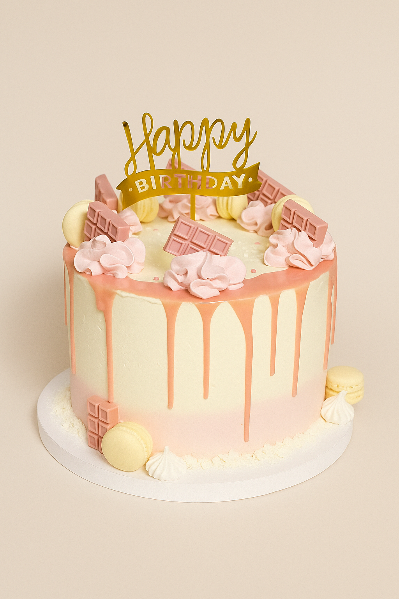
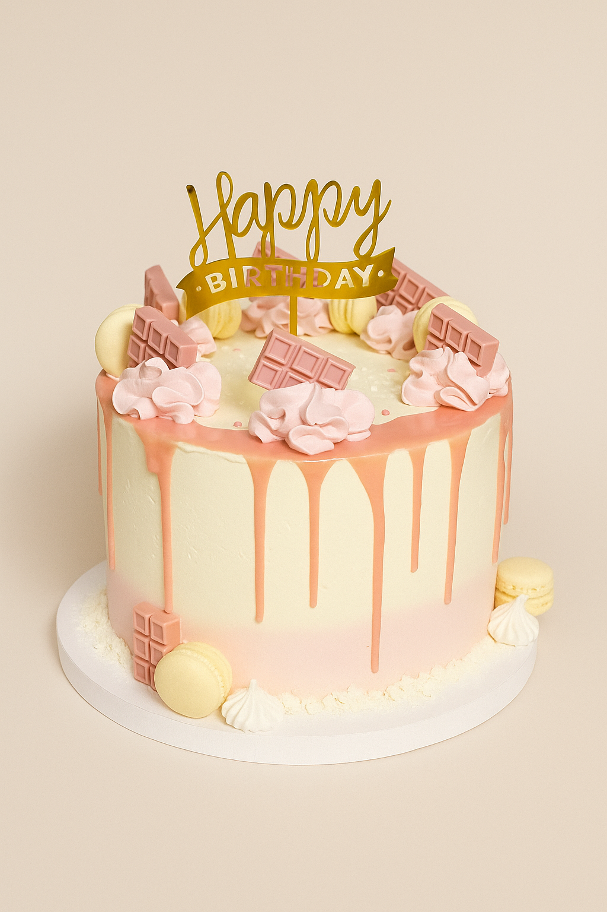
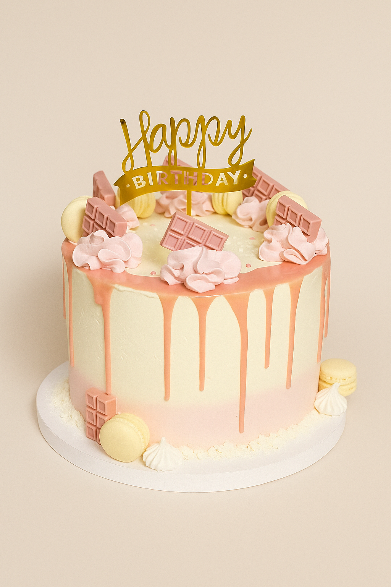

Galeria
 

W miejscu, gdzie powstają torty łączące wyjątkowy smak z niepowtarzalną formą. Każdy wypiek tworzony jest z pasją i troską o detale – wyłącznie z naturalnych składników najwyższej jakości, by każdy kęs niósł ze sobą chwilę prawdziwej przyjemności. To coś więcej niż deser – to słodka opowieść pisana smakiem i sercem, stworzona z myślą o Tobie. Niech stanie się częścią Twoich najpiękniejszych chwil – dodając im blasku i pozostając w sercu na zawsze.
Cześć! Jestem Karina i chcę opowiedzieć Ci, jak narodziła się Carina – Pracownia Tortów Artystycznych. Wszystko zaczęło się od prostych, domowych chwil – pierwsze torty piekłam dla moich dzieci i bliskich, tworząc słodkie niespodzianki na ich wyjątkowe okazje. To wtedy poczułam, że pieczenie to coś więcej niż tylko hobby. Z czasem chęć tworzenia coraz piękniejszych i smaczniejszych wypieków przerodziła się w pasję, a ja zaczęłam zgłębiać różne techniki i eksperymentować z naturalnymi składnikami. Każdy nowy projekt był dla mnie kolejnym krokiem do stworzenia czegoś niepowtarzalnego. Tak powstała Carina – miejsce, gdzie każdy tort powstaje z pasją i zaangażowaniem. Największą nagrodą i motywacją są dla mnie klienci, którzy wracają po kolejne słodkie dzieła – to ich zaufanie napędza mnie każdego dnia. Zapraszam Cię do wspólnej, słodkiej przygody!

Nie ma dwóch takich samych okazji – dlatego każdy tort, który powstaje w Carinie, jest tworzony na indywidualne zamówienie. Ty wybierasz smak biszkoptu, ulubione kremy, dodatki i styl dekoracji, a ja zajmuję się resztą. Wspólnie stworzymy projekt idealnie dopasowany do charakteru Twojego wydarzenia – niezależnie od tego, czy świętujesz urodziny, chrzest, rocznicę, baby shower czy wieczór panieński. Każdy szczegół dopasujemy do Twoich oczekiwań, bo wierzę, że tort to coś więcej niż deser – to serce przyjęcia. Wszystkie wypieki przygotowuję wyłącznie z naturalnych składników: puszystych biszkoptów, kremów na bazie prawdziwej śmietany i czekolady, świeżych owoców i chrupiących dodatków, które dodają wyjątkowej tekstury. Standardowa kompozycja tortu to dwie warstwy nadzienia: – krem + żelka owocowa – krem + chrupiąca pralina Całość otula cienka warstwa delikatnego tynku, który nie tylko pięknie wygląda, ale i doskonale smakuje. 📅 Zamówienia przyjmuję z minimum tygodniowym wyprzedzeniem. 📩 Masz pomysł na swój wymarzony tort? Napisz, prześlij inspiracje – a ja zamienię je w coś naprawdę wyjątkowego!
Jeśli marzysz o przyjęciu, które zachwyci nie tylko smakiem, ale i estetyką – słodki stół to doskonały wybór. Tworzę kompozycje pełne różnorodnych deserów, które staną się ozdobą każdej uroczystości. Dbam o każdy detal – od jakości wypieków po elegancką aranżację stołu. Co może znaleźć się na słodkim stole? • Donuty w klasycznej i nowoczesnej odsłonie, eksponowane na specjalnej ściance • Mini torciki i monoporcje z owocami i kremem • Bezy z bitą śmietaną i świeżymi owocami • Dekoracyjne babeczki z kremem i dodatkami sezonowymi • Porcje tiramisu i deserów w pucharkach • Rurki z kremem i ciasteczka z nadzieniem • Eklery z cukrem pudrem lub polewą • Makaroniki w różnych kolorach i smakach • Deserki na patyku (cake popsy), idealne również dla dzieci • Stylowe dekoracje z kwiatów i zieleni Dlaczego warto? • Indywidualne podejście do każdej realizacji – dopasowuję smaki i wygląd stołu do okazji oraz stylu przyjęcia • Własnoręcznie przygotowywane wypieki na bazie sprawdzonych receptur • Piękne, dopracowane aranżacje, które podkreślą charakter wydarzenia • Możliwość pełnej personalizacji – kolory, styl, tematyka • Zapewniam transport, montaż i demontaż na miejscu Słodki stół to nie tylko deser – to doświadczenie, które goście zapamiętają na długo. Spraw, aby Twoja uroczystość była naprawdę wyjątkowa. 📅 Zamówienia przyjmuję z minimum tygodniowym wyprzedzeniem. 📩 Masz pomysł na swój wymarzone słodkości? Napisz, prześlij inspiracje – a ja zamienię je w coś naprawdę wyjątkowego!
📅 Zamówienia przyjmuję z minimum tygodniowym wyprzedzeniem.
📩 Napisz lub prześlij inspiracje – wspólnie stworzymy coś wyjątkowego!
Carina – Pracownia Tortów Artystycznych
ul. Księżnej Konstancji 20, 44-300 Wodzisław Śląski
+48 502 600 191
pracowniaCarina@torty.pl
Polityka prywatności | Polityka cookies